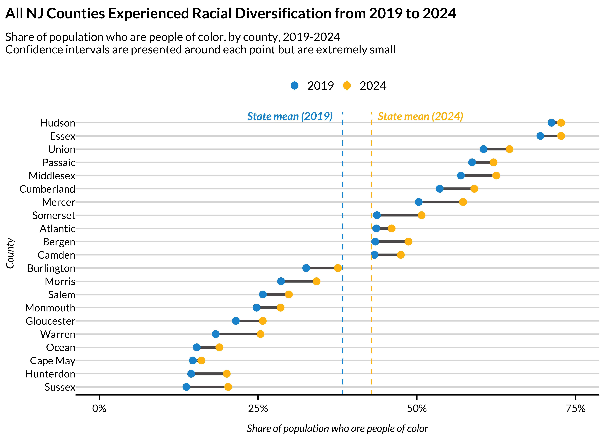

Overview
urbnindicators aims to provide users with analysis-ready data from the American Community Survey (ACS).
With a single function call, you get:
Access to hundreds of standardized variables, such as percentages and the raw count variables used to produce them.
Margins of error and coefficients of variation for all variables–those direct from the API as well as derived variables.
Meaningful, consistent variable names.
A codebook that describes how each variable is calculated.
The built-in capacity to pull data for multiple years and multiple states.
Supplemental measures, such as population density, that aren’t available from the ACS.
Built-in quality checks to help ensure that calculated variables and measures of error are accurate. Plus some good, old-fashioned manual QC. That said–use at your own risk. We cannot and do not guarantee there aren’t bugs.
Installation
Install the development version of urbnindicators from GitHub with:
# install.packages("renv")
renv::install("UI-Research/urbnindicators")You’ll want a Census API key (request one here). Set it once with:
tidycensus::census_api_key("YOUR_KEY", install = TRUE)Note that this package is under active development with frequent updates–check to ensure you have the most recent version installed!
Use
Discover Available Data
list_tables() |> head(10)
#> [1] "age" "computing_devices" "cost_burden"
#> [4] "disability" "educational_attainment" "employment"
#> [7] "gini" "health_insurance" "household_size"
#> [10] "income_quintiles"
list_variables() |> head(10)
#> # A tibble: 10 × 2
#> variable table
#> <chr> <chr>
#> 1 total_population_universe total_population
#> 2 public_assistance_universe public_assistance
#> 3 public_assistance_received public_assistance
#> 4 public_assistance_received_percent public_assistance
#> 5 snap_universe snap
#> 6 snap_received snap
#> 7 snap_received_percent snap
#> 8 household_income_quintile_upper_limit_1 income_quintiles
#> 9 household_income_quintile_upper_limit_2 income_quintiles
#> 10 household_income_quintile_upper_limit_3 income_quintilesObtain Data
A single call to compile_acs_data() returns analysis-ready data with pre-computed percentages, meaningful variable names, and margins of error:
df = compile_acs_data(
tables = "race",
years = 2024,
geography = "county",
states = "NJ")
glimpse(df) |> head(10)
#> Rows: 21
#> Columns: 175
#> $ data_source_year <dbl> 2024, 2024, 2…
#> $ GEOID <chr> "34001", "340…
#> $ NAME <chr> "Atlantic Cou…
#> $ total_population_universe <dbl> 276270, 96231…
#> $ race_universe <dbl> 276270, 96231…
#> $ race_nonhispanic_allraces <dbl> 219985, 74346…
#> $ race_nonhispanic_white_alone <dbl> 149114, 49395…
#> $ race_nonhispanic_black_alone <dbl> 34841, 51787,…
#> $ race_nonhispanic_aian_alone <dbl> 738, 595, 107…
#> $ race_nonhispanic_asian_alone <dbl> 21415, 161731…
#> $ race_nonhispanic_nhpi_alone <dbl> 29, 186, 64, …
#> $ race_nonhispanic_otherrace_alone <dbl> 1434, 7569, 3…
#> $ race_nonhispanic_twoormore <dbl> 12414, 27633,…
#> $ race_nonhispanic_twoormore_includingotherrace <dbl> 1696, 8038, 6…
#> $ race_nonhispanic_twoormore_excludingotherrace <dbl> 10718, 19595,…
#> $ race_hispanic_allraces <dbl> 56285, 218856…
#> $ race_hispanic_white_alone <dbl> 5923, 36191, …
#> $ race_hispanic_black_alone <dbl> 2269, 4341, 2…
#> $ race_hispanic_aian_alone <dbl> 1223, 2142, 8…
#> $ race_hispanic_asian_alone <dbl> 266, 730, 210…
#> $ race_hispanic_nhpi_alone <dbl> 0, 67, 25, 11…
#> $ race_hispanic_otherrace_alone <dbl> 24930, 72826,…
#> $ race_hispanic_twoormore <dbl> 21674, 102559…
#> $ race_hispanic_twoormore_includingotherrace <dbl> 20211, 92733,…
#> $ race_hispanic_twoormore_excludingotherrace <dbl> 1463, 9826, 3…
#> $ race_nonhispanic_allraces_percent <dbl> 0.7963, 0.772…
#> $ race_nonhispanic_white_alone_percent <dbl> 0.5397, 0.513…
#> $ race_nonhispanic_black_alone_percent <dbl> 0.1261, 0.053…
#> $ race_nonhispanic_aian_alone_percent <dbl> 0.0027, 0.000…
#> $ race_nonhispanic_asian_alone_percent <dbl> 0.0775, 0.168…
#> $ race_nonhispanic_nhpi_alone_percent <dbl> 0.0001, 0.000…
#> $ race_nonhispanic_otherrace_alone_percent <dbl> 0.0052, 0.007…
#> $ race_nonhispanic_twoormore_percent <dbl> 0.0449, 0.028…
#> $ race_nonhispanic_twoormore_includingotherrace_percent <dbl> 0.0061, 0.008…
#> $ race_nonhispanic_twoormore_excludingotherrace_percent <dbl> 0.0388, 0.020…
#> $ race_hispanic_allraces_percent <dbl> 0.2037, 0.227…
#> $ race_hispanic_white_alone_percent <dbl> 0.0214, 0.037…
#> $ race_hispanic_black_alone_percent <dbl> 0.0082, 0.004…
#> $ race_hispanic_aian_alone_percent <dbl> 0.0044, 0.002…
#> $ race_hispanic_asian_alone_percent <dbl> 0.0010, 0.000…
#> $ race_hispanic_nhpi_alone_percent <dbl> 0e+00, 1e-04,…
#> $ race_hispanic_otherrace_alone_percent <dbl> 0.0902, 0.075…
#> $ race_hispanic_twoormore_percent <dbl> 0.0785, 0.106…
#> $ race_hispanic_twoormore_includingotherrace_percent <dbl> 0.0732, 0.096…
#> $ race_hispanic_twoormore_excludingotherrace_percent <dbl> 0.0053, 0.010…
#> $ race_personofcolor_percent <dbl> 0.4603, 0.486…
#> $ total_population_universe_M <dbl> 0, 0, 0, 0, 0…
#> $ race_universe_M <dbl> 0, 0, 0, 0, 0…
#> $ race_nonhispanic_allraces_M <dbl> 0, 0, 0, 0, 0…
#> $ race_nonhispanic_white_alone_M <dbl> 638, 1467, 14…
#> $ race_nonhispanic_black_alone_M <dbl> 1070, 1068, 1…
#> $ race_nonhispanic_aian_alone_M <dbl> 369, 186, 55,…
#> $ race_nonhispanic_asian_alone_M <dbl> 614, 1300, 59…
#> $ race_nonhispanic_nhpi_alone_M <dbl> 47, 75, 87, 6…
#> $ race_nonhispanic_otherrace_alone_M <dbl> 538, 1401, 10…
#> $ race_nonhispanic_twoormore_M <dbl> 1255, 1611, 1…
#> $ race_nonhispanic_twoormore_includingotherrace_M <dbl> 469, 1219, 11…
#> $ race_nonhispanic_twoormore_excludingotherrace_M <dbl> 1127, 1349, 1…
#> $ race_hispanic_allraces_M <dbl> 0, 0, 0, 0, 0…
#> $ race_hispanic_white_alone_M <dbl> 945, 2577, 10…
#> $ race_hispanic_black_alone_M <dbl> 624, 818, 440…
#> $ race_hispanic_aian_alone_M <dbl> 662, 732, 459…
#> $ race_hispanic_asian_alone_M <dbl> 171, 222, 138…
#> $ race_hispanic_nhpi_alone_M <dbl> 33, 73, 41, 1…
#> $ race_hispanic_otherrace_alone_M <dbl> 1853, 3745, 1…
#> $ race_hispanic_twoormore_M <dbl> 2045, 3799, 1…
#> $ race_hispanic_twoormore_includingotherrace_M <dbl> 2006, 3662, 1…
#> $ race_hispanic_twoormore_excludingotherrace_M <dbl> 456, 1526, 72…
#> $ total_population_universe_SE <dbl> 0, 0, 0, 0, 0…
#> $ race_universe_SE <dbl> 0, 0, 0, 0, 0…
#> $ race_nonhispanic_allraces_SE <dbl> 0, 0, 0, 0, 0…
#> $ race_nonhispanic_white_alone_SE <dbl> 387.8419, 891…
#> $ race_nonhispanic_black_alone_SE <dbl> 650.4559, 649…
#> $ race_nonhispanic_aian_alone_SE <dbl> 224.3161, 113…
#> $ race_nonhispanic_asian_alone_SE <dbl> 373.2523, 790…
#> $ race_nonhispanic_nhpi_alone_SE <dbl> 28.5714, 45.5…
#> $ race_nonhispanic_otherrace_alone_SE <dbl> 327.0517, 851…
#> $ race_nonhispanic_twoormore_SE <dbl> 762.9179, 979…
#> $ race_nonhispanic_twoormore_includingotherrace_SE <dbl> 285.1064, 741…
#> $ race_nonhispanic_twoormore_excludingotherrace_SE <dbl> 685.1064, 820…
#> $ race_hispanic_allraces_SE <dbl> 0, 0, 0, 0, 0…
#> $ race_hispanic_white_alone_SE <dbl> 574.4681, 156…
#> $ race_hispanic_black_alone_SE <dbl> 379.3313, 497…
#> $ race_hispanic_aian_alone_SE <dbl> 402.4316, 444…
#> $ race_hispanic_asian_alone_SE <dbl> 103.9514, 134…
#> $ race_hispanic_nhpi_alone_SE <dbl> 20.0608, 44.3…
#> $ race_hispanic_otherrace_alone_SE <dbl> 1126.4438, 22…
#> $ race_hispanic_twoormore_SE <dbl> 1243.1611, 23…
#> $ race_hispanic_twoormore_includingotherrace_SE <dbl> 1219.4529, 22…
#> $ race_hispanic_twoormore_excludingotherrace_SE <dbl> 277.2036, 927…
#> $ race_nonhispanic_allraces_percent_SE <dbl> 0, 0, 0, 0, 0…
#> $ race_nonhispanic_white_alone_percent_SE <dbl> 0.0014, 0.000…
#> $ race_nonhispanic_black_alone_percent_SE <dbl> 0.0024, 0.000…
#> $ race_nonhispanic_aian_alone_percent_SE <dbl> 8e-04, 1e-04,…
#> $ race_nonhispanic_asian_alone_percent_SE <dbl> 0.0014, 0.000…
#> $ race_nonhispanic_nhpi_alone_percent_SE <dbl> 1e-04, 0e+00,…
#> $ race_nonhispanic_otherrace_alone_percent_SE <dbl> 0.0012, 0.000…
#> $ race_nonhispanic_twoormore_percent_SE <dbl> 0.0028, 0.001…
#> $ race_nonhispanic_twoormore_includingotherrace_percent_SE <dbl> 0.0010, 0.000…
#> $ race_nonhispanic_twoormore_excludingotherrace_percent_SE <dbl> 0.0025, 0.000…
#> $ race_hispanic_allraces_percent_SE <dbl> 0, 0, 0, 0, 0…
#> $ race_hispanic_white_alone_percent_SE <dbl> 0.0021, 0.001…
#> $ race_hispanic_black_alone_percent_SE <dbl> 0.0014, 0.000…
#> $ race_hispanic_aian_alone_percent_SE <dbl> 0.0015, 0.000…
#> $ race_hispanic_asian_alone_percent_SE <dbl> 4e-04, 1e-04,…
#> $ race_hispanic_nhpi_alone_percent_SE <dbl> 1e-04, 0e+00,…
#> $ race_hispanic_otherrace_alone_percent_SE <dbl> 0.0041, 0.002…
#> $ race_hispanic_twoormore_percent_SE <dbl> 0.0045, 0.002…
#> $ race_hispanic_twoormore_includingotherrace_percent_SE <dbl> 0.0044, 0.002…
#> $ race_hispanic_twoormore_excludingotherrace_percent_SE <dbl> 0.0010, 0.001…
#> $ race_personofcolor_percent_SE <dbl> 0.0014, 0.000…
#> $ total_population_universe_CV <dbl> 0, 0, 0, 0, 0…
#> $ race_universe_CV <dbl> 0, 0, 0, 0, 0…
#> $ race_nonhispanic_allraces_CV <dbl> 0, 0, 0, 0, 0…
#> $ race_nonhispanic_white_alone_CV <dbl> 0.2601, 0.180…
#> $ race_nonhispanic_black_alone_CV <dbl> 1.8669, 1.253…
#> $ race_nonhispanic_aian_alone_CV <dbl> 30.3951, 19.0…
#> $ race_nonhispanic_asian_alone_CV <dbl> 1.7429, 0.488…
#> $ race_nonhispanic_nhpi_alone_CV <dbl> 98.5222, 24.5…
#> $ race_nonhispanic_otherrace_alone_CV <dbl> 22.8070, 11.2…
#> $ race_nonhispanic_twoormore_CV <dbl> 6.1456, 3.544…
#> $ race_nonhispanic_twoormore_includingotherrace_CV <dbl> 16.8105, 9.21…
#> $ race_nonhispanic_twoormore_excludingotherrace_CV <dbl> 6.3921, 4.185…
#> $ race_hispanic_allraces_CV <dbl> 0, 0, 0, 0, 0…
#> $ race_hispanic_white_alone_CV <dbl> 9.6989, 4.328…
#> $ race_hispanic_black_alone_CV <dbl> 16.7180, 11.4…
#> $ race_hispanic_aian_alone_CV <dbl> 32.9053, 20.7…
#> $ race_hispanic_asian_alone_CV <dbl> 39.0795, 18.4…
#> $ race_hispanic_nhpi_alone_CV <dbl> NA, 66.2342, …
#> $ race_hispanic_otherrace_alone_CV <dbl> 4.5184, 3.126…
#> $ race_hispanic_twoormore_CV <dbl> 5.7357, 2.251…
#> $ race_hispanic_twoormore_includingotherrace_CV <dbl> 6.0336, 2.400…
#> $ race_hispanic_twoormore_excludingotherrace_CV <dbl> 18.9476, 9.44…
#> $ race_nonhispanic_allraces_percent_CV <dbl> 0, 0, 0, 0, 0…
#> $ race_nonhispanic_white_alone_percent_CV <dbl> 0.2601, 0.180…
#> $ race_nonhispanic_black_alone_percent_CV <dbl> 1.8669, 1.253…
#> $ race_nonhispanic_aian_alone_percent_CV <dbl> 30.3951, 19.0…
#> $ race_nonhispanic_asian_alone_percent_CV <dbl> 1.7429, 0.488…
#> $ race_nonhispanic_nhpi_alone_percent_CV <dbl> 98.5222, 24.5…
#> $ race_nonhispanic_otherrace_alone_percent_CV <dbl> 22.8070, 11.2…
#> $ race_nonhispanic_twoormore_percent_CV <dbl> 6.1456, 3.544…
#> $ race_nonhispanic_twoormore_includingotherrace_percent_CV <dbl> 16.8105, 9.21…
#> $ race_nonhispanic_twoormore_excludingotherrace_percent_CV <dbl> 6.3921, 4.185…
#> $ race_hispanic_allraces_percent_CV <dbl> 0, 0, 0, 0, 0…
#> $ race_hispanic_white_alone_percent_CV <dbl> 9.6989, 4.328…
#> $ race_hispanic_black_alone_percent_CV <dbl> 16.7180, 11.4…
#> $ race_hispanic_aian_alone_percent_CV <dbl> 32.9053, 20.7…
#> $ race_hispanic_asian_alone_percent_CV <dbl> 39.0795, 18.4…
#> $ race_hispanic_nhpi_alone_percent_CV <dbl> NA, 66.2342, …
#> $ race_hispanic_otherrace_alone_percent_CV <dbl> 4.5184, 3.126…
#> $ race_hispanic_twoormore_percent_CV <dbl> 5.7357, 2.251…
#> $ race_hispanic_twoormore_includingotherrace_percent_CV <dbl> 6.0336, 2.400…
#> $ race_hispanic_twoormore_excludingotherrace_percent_CV <dbl> 18.9476, 9.44…
#> $ race_personofcolor_percent_CV <dbl> 0.3050, 0.190…
#> $ race_nonhispanic_allraces_percent_M <dbl> 0, 0, 0, 0, 0…
#> $ race_nonhispanic_white_alone_percent_M <dbl> 0.0023, 0.001…
#> $ race_nonhispanic_black_alone_percent_M <dbl> 0.0039, 0.001…
#> $ race_nonhispanic_aian_alone_percent_M <dbl> 0.0013, 0.000…
#> $ race_nonhispanic_asian_alone_percent_M <dbl> 0.0022, 0.001…
#> $ race_nonhispanic_nhpi_alone_percent_M <dbl> 0.0002, 0.000…
#> $ race_nonhispanic_otherrace_alone_percent_M <dbl> 0.0019, 0.001…
#> $ race_nonhispanic_twoormore_percent_M <dbl> 0.0045, 0.001…
#> $ race_nonhispanic_twoormore_includingotherrace_percent_M <dbl> 0.0017, 0.001…
#> $ race_nonhispanic_twoormore_excludingotherrace_percent_M <dbl> 0.0041, 0.001…
#> $ race_hispanic_allraces_percent_M <dbl> 0, 0, 0, 0, 0…
#> $ race_hispanic_white_alone_percent_M <dbl> 0.0034, 0.002…
#> $ race_hispanic_black_alone_percent_M <dbl> 0.0023, 0.000…
#> $ race_hispanic_aian_alone_percent_M <dbl> 0.0024, 0.000…
#> $ race_hispanic_asian_alone_percent_M <dbl> 6e-04, 2e-04,…
#> $ race_hispanic_nhpi_alone_percent_M <dbl> 1e-04, 1e-04,…
#> $ race_hispanic_otherrace_alone_percent_M <dbl> 0.0067, 0.003…
#> $ race_hispanic_twoormore_percent_M <dbl> 0.0074, 0.003…
#> $ race_hispanic_twoormore_includingotherrace_percent_M <dbl> 0.0073, 0.003…
#> $ race_hispanic_twoormore_excludingotherrace_percent_M <dbl> 0.0017, 0.001…
#> $ race_personofcolor_percent_M <dbl> 0.0023, 0.001…
#> # A tibble: 10 × 175
#> data_source_year GEOID NAME total_population_uni…¹ race_universe
#> <dbl> <chr> <chr> <dbl> <dbl>
#> 1 2024 34001 Atlantic County,… 276270 276270
#> 2 2024 34003 Bergen County, N… 962316 962316
#> 3 2024 34005 Burlington Count… 467805 467805
#> 4 2024 34007 Camden County, N… 527257 527257
#> 5 2024 34009 Cape May County,… 94941 94941
#> 6 2024 34011 Cumberland Count… 153305 153305
#> 7 2024 34013 Essex County, Ne… 863002 863002
#> 8 2024 34015 Gloucester Count… 306954 306954
#> 9 2024 34017 Hudson County, N… 718323 718323
#> 10 2024 34019 Hunterdon County… 130160 130160
#> # ℹ abbreviated name: ¹total_population_universe
#> # ℹ 170 more variables: race_nonhispanic_allraces <dbl>,
#> # race_nonhispanic_white_alone <dbl>, race_nonhispanic_black_alone <dbl>,
#> # race_nonhispanic_aian_alone <dbl>, race_nonhispanic_asian_alone <dbl>,
#> # race_nonhispanic_nhpi_alone <dbl>, race_nonhispanic_otherrace_alone <dbl>,
#> # race_nonhispanic_twoormore <dbl>,
#> # race_nonhispanic_twoormore_includingotherrace <dbl>, …Visualize Data
compile_acs_data() makes it easy to pull multiple years and produce publication-ready visualizations:
df = compile_acs_data(
tables = "race",
## selecting 5-year ACS data from years with no measurement overlap
years = c(2019, 2024),
geography = "county",
states = "NJ")
plot_data = df %>%
transmute(
county_name = NAME %>% str_remove(" County, New Jersey"),
race_personofcolor_percent,
race_personofcolor_percent_SE,
data_source_year = factor(data_source_year))
state_averages = plot_data %>%
summarize(
.by = data_source_year,
mean_pct = mean(race_personofcolor_percent)) %>%
arrange(data_source_year) %>%
pull(mean_pct)
## order counties by 2019 value for the dumbbell plot
county_order = plot_data %>%
filter(data_source_year == "2019") %>%
arrange(race_personofcolor_percent) %>%
pull(county_name)
plot_data = plot_data %>%
mutate(county_name = factor(county_name, levels = county_order))
dumbbell_data = plot_data %>%
pivot_wider(
id_cols = county_name,
names_from = data_source_year,
values_from = race_personofcolor_percent,
names_prefix = "year_")
ggplot() +
geom_segment(
data = dumbbell_data,
aes(
x = county_name,
y = year_2019,
yend = year_2024),
color = palette_urbn_main[7],
linewidth = 1) +
ggdist::stat_gradientinterval(
data = plot_data,
aes(
x = county_name,
ydist = distributional::dist_normal(
race_personofcolor_percent,
race_personofcolor_percent_SE),
color = data_source_year),
point_size = 2,
.width = .95) +
geom_hline(
yintercept = state_averages[1],
linetype = "dashed",
color = palette_urbn_main[1]) +
geom_hline(
yintercept = state_averages[2],
linetype = "dashed",
color = palette_urbn_main[2]) +
annotate(
"text",
y = state_averages[1] - .15,
x = 21.5,
label = "State mean (2019)",
fontface = "bold.italic",
color = palette_urbn_main[1],
size = 9 / .pt,
hjust = 0,
nudge_y = .01) +
annotate(
"text",
y = state_averages[2] + .01,
x = 21.5,
label = "State mean (2024)",
fontface = "bold.italic",
color = palette_urbn_main[2],
size = 9 / .pt,
hjust = 0,
nudge_y = .01) +
labs(
title = "All NJ Counties Experienced Racial Diversification from 2019 to 2024",
subtitle = paste0("Share of population who are people of color, by county, 2019-2024
Confidence intervals are presented around each point but are extremely small"),
x = "",
y = "Share of population who are people of color") +
scale_x_discrete(expand = expansion(mult = c(.03, .04))) +
scale_y_continuous(
breaks = c(0, .25, .50, .75, 1.0),
limits = c(0, .75),
labels = scales::percent) +
coord_flip() +
theme_urbn_print()
Learn More
Check out the vignettes for additional details:
A package overview to help users Get Started.
An interactive version of the package’s Codebook so that prospective users can know what to expect.
A brief description of the package’s Design Philosophy to clarify the use-cases that
urbnindicatorsis built to support.An illustration of how Quantifying Survey Error can improve inference making.
You can re-create your indicators and their measures of error for Custom Geographies. Neighborhoods? Unincorporated counties? Start here.
Credits
This package is built on top of and enormously indebted to library(tidycensus), which provides the core functionality for accessing the Census Bureau API. For users who want additional variables, library(tidycensus) exposes the entire range of pre-tabulated variables available from the ACS and provides access to ACS microdata and other Census Bureau datasets.
Learn more here: https://walker-data.com/tidycensus/index.html.